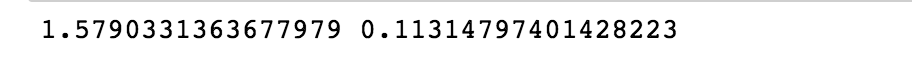

Numpy的优势
学习目标
- 目标
- 了解Numpy运算速度上的优势
- 知道Numpy的数组内存块风格
- 知道Numpy的并行化运算
- 应用
- 无
一、为什么学习Numpy
在这里我们通过一段带运行来体会到Numpy的好处
import random
import time
import numpy as np
a = []
for i in range(100000000):
a.append(random.random())
t1 = time.time()
sum1=sum(a)
t2=time.time()
b=np.array(a)
t4=time.time()
sum3=np.sum(b)
t5=time.time()
print(t2-t1, t5-t4)
t2-t1为使用python自带的求和函数消耗的时间，t5-t4为使用numpy求和消耗的时间，结果为：

从中我们看到numpy的计算速度要快很多，节约了时间。
那么，机器学习的最大特点就是大量的数据运算，那么如果没有一个快速的解决方案，那可能现在python也在机器学习领域达不到好的效果。

二、Numpy介绍

- 一个强大的N维数组对象
- 支持大量的数据运算
- 集成C / C++和Fortran代码的工具
- 众多机器学习框架的基础库(Scipy/Pandas/scikit-learn/Tensorflow)
三、Numpy的特点
为什么Numpy会快？
我们都知道Python作为一个动态语言一大特点就是慢，语言本身的特点我们可以抛开不说，并且CPython还带有GIL锁，发挥不了多核的优势，但是我们前面学过那么多也没怎么体会到速度慢呢？？？那是因为前面的django、flask或者scrapy这些框架，其实都是一些基于网络的操作（主要是IO操作）。这里给大家思考题了，为什么网络操作其实并不怎么会受到GIL的影响？快快快思考，如果不知道，我在这里给一张图，就不过多解释了，注意大小顺序按照开销排序

但是，如果是我们机器学习怎么办，充满大量的计算。没有解决这个问题，会消耗大量的时间运算，如果还是使用原来的Python函数或者工具，那么估计在机器学习领域就没有Python什么事情了！但是有的Numpy就好多了，接下来我们了解了解Numpy到底好在哪？
1、Numpy的数组内存块风格
在numpy当中一个核心就是ndarray(这个稍后会详细介绍)，那么这个称之为数组的东西到底跟原本的python列表有什么不同呢，请看一张图：

从图中我们看出来numpy其实在存储数据的时候，数据与数据的地址都是连续的，这样就给我们操作带来了好处，处理速度快。在计算机内存里是存储在一个连续空间上的，而对于这个连续空间，我们如果创建 Array 的方式不同，在这个连续空间上的排列顺序也有不同。
创建array的默认方式是 “C-type” 以 row 为主在内存中排列
如果是 “Fortran” 的方式创建的，就是以 column 为主在内存中排列
如下图：

2、Numpy的并行化运算
那么numpy的第二个特点就是，支持并行化运算，也叫向量化运算。当然向量是数学当中的概念，我们不过多解释，只需要知道他的优势即可。
numpy的许多函数不仅是用C实现了，还使用了BLAS（一般Windows下link到MKL的，下link到OpenBLAS）。基本上那些BLAS实现在每种操作上都进行了高度优化，例如使用AVX向量指令集，甚至能比你自己用C实现快上许多，更不要说和用Python实现的比。
也就是说numpy底层使用BLAS做向量，矩阵运算。比如我们刚才提到的房子面积到价格的运算，很容易使用multi-threading或者vectorization来加速。